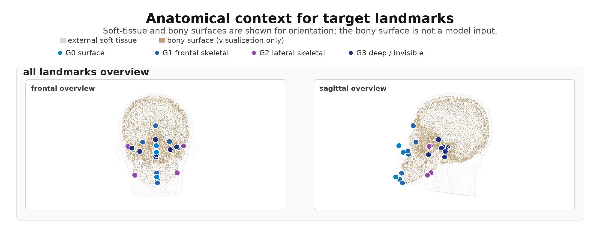
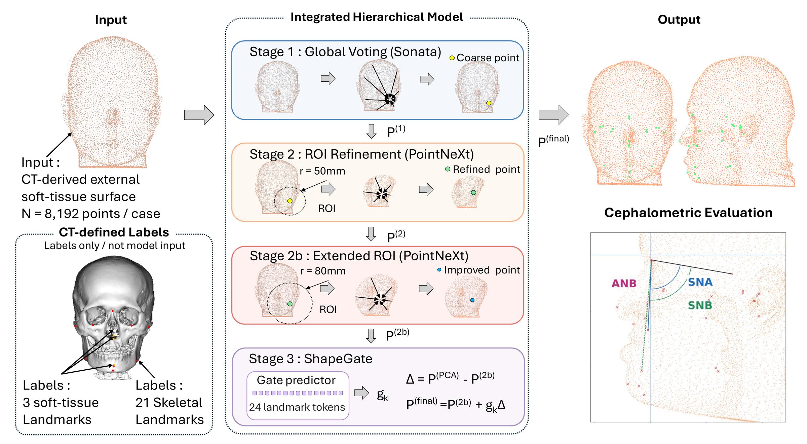
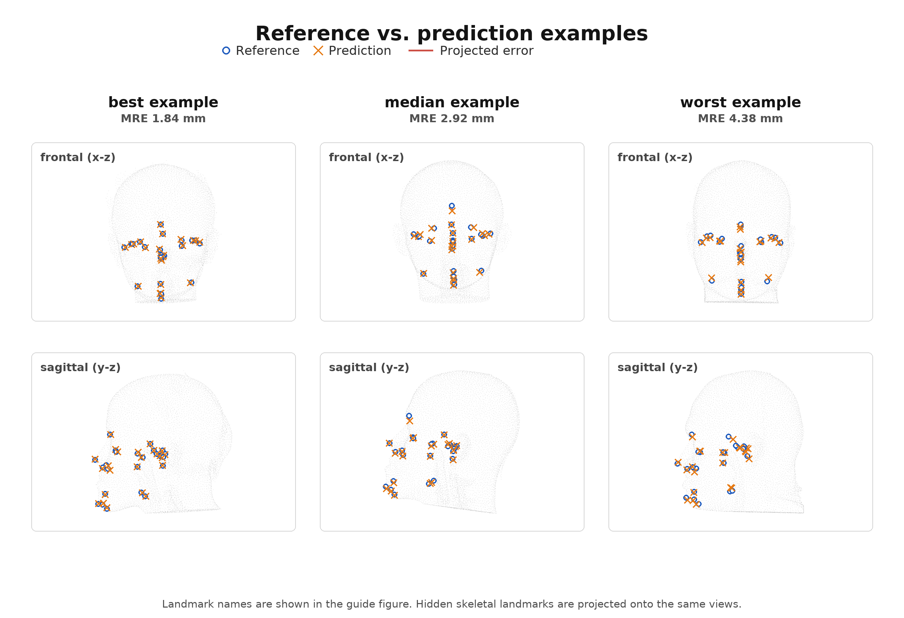

Existing 3D facial-landmark methods localize points on visible skin, but whether CT-defined internal skeletal landmarks can be inferred from external soft-tissue geometry remains unclear. We formulate a coordinate-consistent surface-to-skeleton task using same-acquisition CT-derived surfaces, separating estimation from optical-to-CT registration, scanner-domain, and acquisition-state effects, with coverage analyzed separately. From 240 clinical CT scans from two hospitals, we construct a locked retrospective protocol pairing CT-derived external soft-tissue point clouds with 21 skeletal landmarks and three visible soft-tissue landmarks. An integrated hierarchical point-cloud model achieves 2.97 mm mean radial error on skeletal landmarks and 3.03 mm on deep or surface-invisible landmarks in 40 held-out patients. Patient-mismatch controls support patient-specific signal beyond a fixed population configuration or global similarity alone, while coverage ablations indicate dependence on non-anterior geometry. Optical-transfer diagnostics reveal substantial coverage-related and global-configuration components, although deployable optical inference remains unresolved. These results answer the controlled feasibility question affirmatively and provide a basis for hidden skeletal landmark inference.
Cephalometric landmarks quantify the spatial relations among the cranial base, maxilla, and mandible, and are normally identified on CT/CBCT — at the cost of ionizing radiation. External head surfaces, in contrast, can be captured radiation-free by optical 3D scanners. A direct optical-to-CT study, however, entangles many error sources: surface-to-skeleton ambiguity, cross-modality registration, scanner-domain shift, coverage, expression, and the time gap between acquisitions.
We therefore isolate the core scientific question first: does the external 3D head surface itself contain predictive signal for CT-defined skeletal landmarks? Both the input surface and the target landmarks are derived from the same CT acquisition, so no cross-modality registration is involved. The 24 target landmarks are grouped by surface observability, from directly visible soft-tissue points (G0) to deep, surface-invisible skeletal points such as Sella, Basion, and Foramen Ovale (G3).

Target landmarks grouped by observability: G0 surface (3), G1 frontal skeletal (8), G2 lateral skeletal (4), and G3 deep / surface-invisible (9). The bony surface is shown for orientation only — it is never a model input.
The model takes 8,192 surface points with normals and predicts all 24 landmarks in the registered CT frame through four stages: coarse global localization, two levels of local ROI refinement, and a conservative, gated statistical-shape calibration. Ablations show the ROI refinement drives most of the gain, while the final gate acts as modest calibration of the global landmark configuration.

The external soft-tissue point cloud is the only model input; CT-defined skeletal landmarks are labels, and the bony surface is never seen by the model.
A fine-tuned Sonata (Point Transformer V3) encoder lets every surface point vote for each landmark with a predicted offset and confidence; the softmax-weighted centroid gives a coarse estimate.
A PointNeXt encoder refines each landmark within a 50-mm sphere around the coarse estimate, using relative coordinates, normals, and a landmark-identity code to predict a damped residual.
Fourteen high-error landmarks — mostly lateral and deep ones — receive a second refinement with a wider 80-mm context, capturing craniofacial structure beyond the local surface patch.
A PCA shape model of the 24-landmark configuration proposes a correction, and a learned per-landmark gate in [0, 1] decides how much of it to apply — conservative calibration anchored to the Stage-2b prediction.
On the 40-patient locked test set, the full pipeline reaches 2.91 mm mean radial error over all 24 landmarks (95% CI 2.73–3.11 mm), with gross failures above 10 mm in only 0.7% of instances. It outperforms generic point-cloud encoders, a strong coarse-to-local comparator, and a global-descriptor PCA-ridge statistical-shape baseline under the same locked split — the low-dimensional shape model alone (6.91 mm) is clearly insufficient for the surface-to-skeleton mapping.
| Method | MRE (mm) ↓ | SDR@3 (%) ↑ | SDR@5 (%) ↑ | P95 (mm) ↓ | Fail@10 (%) ↓ |
|---|---|---|---|---|---|
| Training-mean landmarks | 8.69 | 8.6 | 22.8 | 17.79 | 31.5 |
| Global-desc. PCA-ridge | 6.91 | 11.7 | 35.2 | 13.65 | 18.4 |
| PointNet++ | 3.90 | 40.1 | 76.3 | 8.06 | 1.5 |
| PointNeXt | 3.80 | 40.0 | 77.6 | 7.78 | 1.7 |
| PointMAE | 5.22 | 18.2 | 51.8 | 9.66 | 3.9 |
| PTv3 | 3.79 | 42.8 | 76.8 | 7.90 | 1.9 |
| Sonata/PTv3 (Stage 1) | 3.61 | 46.9 | 79.9 | 7.84 | 1.7 |
| PTv3 + PointNeXt ROI | 3.14 | 57.7 | 85.5 | 6.72 | 1.4 |
| Full pipeline (ours) | 2.91 | 62.7 | 88.0 | 6.50 | 0.7 |
Held-out test performance over all 24 landmarks on the 40-patient locked test set. All baselines use the same split, registered coordinates, and point samples.
| Observability group | n | MRE (mm) | SDR@3 (%) |
|---|---|---|---|
| G0 Surface soft-tissue | 3 | 2.56 | 78.3 |
| G1 Frontal skeletal | 8 | 2.63 | 68.1 |
| G2 Lateral skeletal | 4 | 3.50 | 48.8 |
| G3 Deep / invisible | 9 | 3.03 | 58.9 |
Deep landmarks (G3) remain predictable at 3.03 mm: although invisible, their positions are constrained by global craniofacial shape. Lateral landmarks (G2) with variable soft-tissue thickness are the hardest group.

Best (1.84 mm), median (2.92 mm), and worst (4.38 mm) held-out cases. Reference (circles) and predicted (crosses) landmarks are projected onto frontal and sagittal views; hidden skeletal landmarks are projected onto the same views.
Shuffling predictions across patients raises MRE from 2.91 to 11.87 mm — worse than the training-mean baseline — and a best-fit similarity alignment still leaves 5.36 mm. Matched external geometry carries patient-specific information beyond a fixed population configuration or global similarity, for every observability group including deep landmarks.
Frozen anterior-coverage masks degrade performance monotonically: a mild frontal crop costs +0.30 mm, while a tight face-only crop reaches 4.77 mm MRE. Posterior, lateral, and inferior geometry contributes to hidden-landmark inference — a key consideration for future optical capture protocols.
ANB reaches 1.22° mean absolute error, and sagittal skeletal class agreement is 34/40 (85%, κ = 0.76). SNA/SNB are less accurate because both depend on deep Sella. This small cohort motivates screening-oriented research but does not establish clinical safety.
On the eight linked test patients, direct frozen full-pipeline transfer from real Vectra scans yields 10.96 mm patient-level MRE, versus 2.79 mm for clean CT-derived inputs. Separately, across all 14 Vectra scans, coverage-standardized CT-only retraining improves scan-level Stage-1 transfer from 12.40 to 7.94 mm. Diagnostics reveal a large global-configuration component — but deployable local correspondence in the optical domain is unresolved.
This study answers a controlled feasibility question, not a clinical deployment question. It provides a coordinate-consistent reference protocol for staged translation toward radiation-free cephalometry — it is not evidence for immediate screening, triage, or follow-up use, and CT remains necessary whenever internal anatomy must be directly visualized.
This work was partially supported by JSPS KAKENHI Grant Numbers 23K28112 and 24K13203.
@InProceedings{abe2026surface2skeleton,
author = {Abe, Tomoki and Kanaya, Taiki and Saita, Kazuki and Noda, Mao and Tachiki, Chie and Nishii, Yasushi and Saito, Hideo},
title = {Surface-to-Skeleton 3D Cephalometry: Estimating Hidden Skeletal Landmarks from CT-Derived External Soft-Tissue Surfaces},
booktitle = {Proceedings of the European Conference on Computer Vision (ECCV) Workshops},
month = {September},
year = {2026}
}